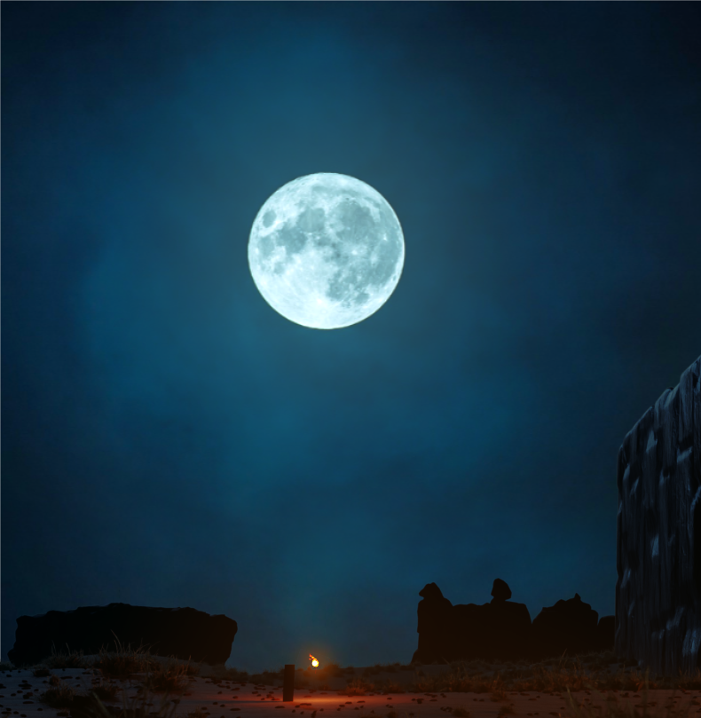
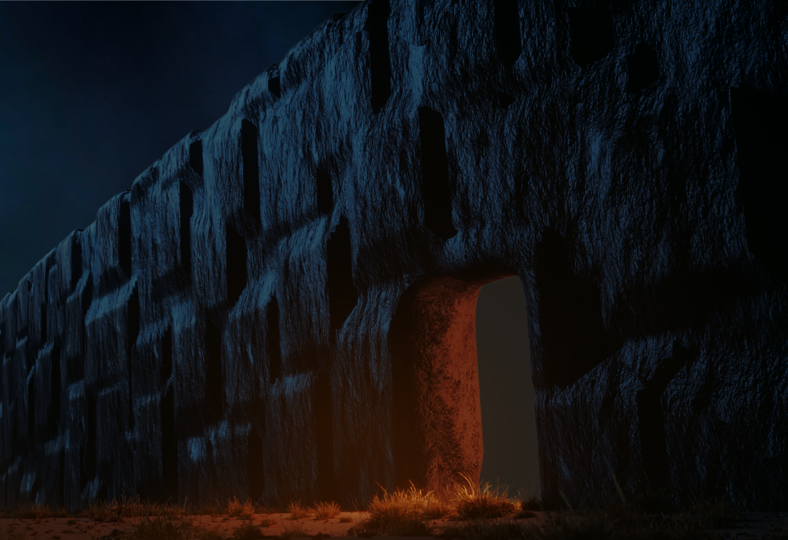
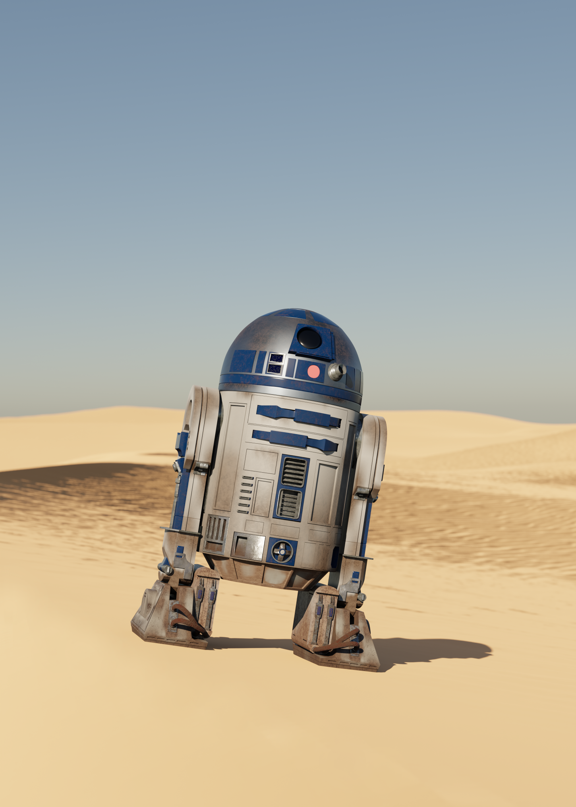
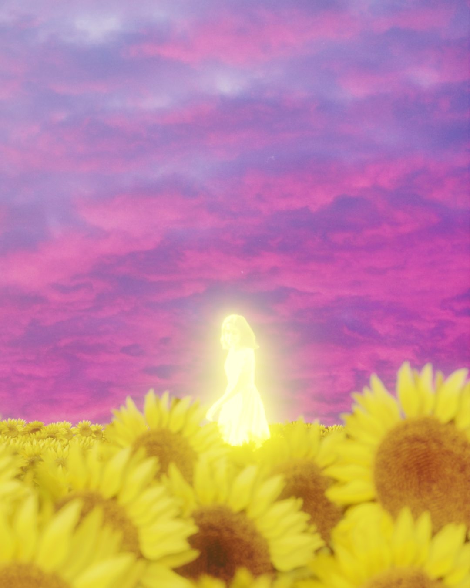
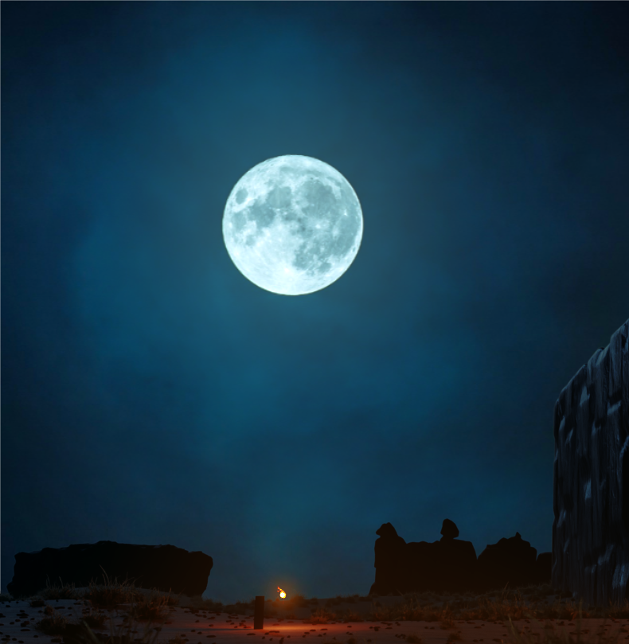
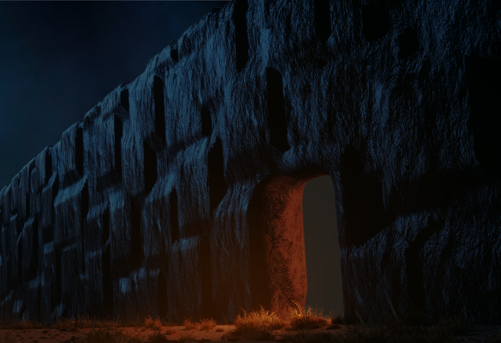
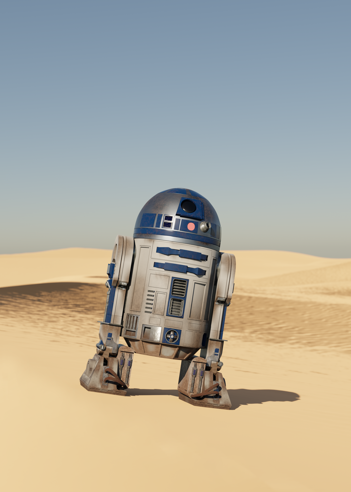
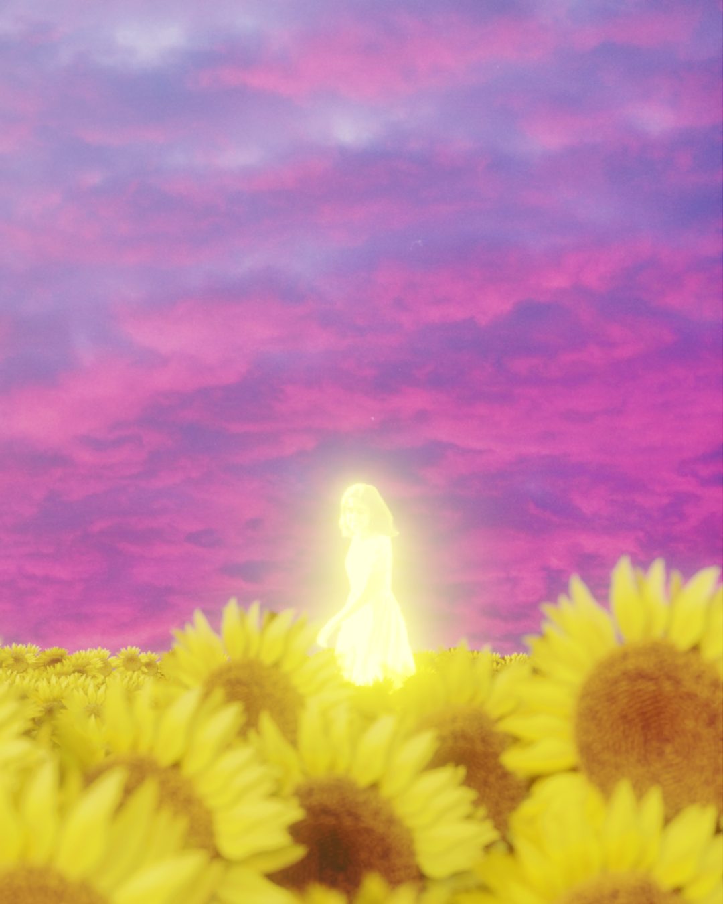
Detta är sidan om mina intressen och vad jag gör på fritiden. Jag har inte jättemånga fritidsintressen och är inte heller särskilt bra på dem, men jag hoppas att du fortfarande tycker om att läsa om dem.
Jag älskar att kolla på filmer, analysera dem och skriva recensioner till dem. Filmer ät ett otroligt sätt att berätta historier på. Det är en upplevelse som är både visuell och auditiv som, när det görs rätt, transporterar dig till en helt annan värld. Det finns berättelser om krig, kärlek, depression, lycka och allt däremellan.
Något jag gillar att göra är att lägga upp mina tankar om filmer på en hemsida som heter Letterboxd, vilket är lite som Instagram för filmer där man kan hitta andra användare, se recensioner på filmer och även tycka till själv om filmer. Du kan hitta min Letterboxd profil här.
Något annat jag gillar att göra på min fritid när jag får inspiration till det är att göra 3D-art. Jag använder ett program som heter Blender där man kan modellera i 3D, lägga till texturer och sätta upp ljus för att få en bild. Jag har en Instagram där jag lägger upp mina bilder som ni kan besöka här.
Mina bästa bilder enligt mig:
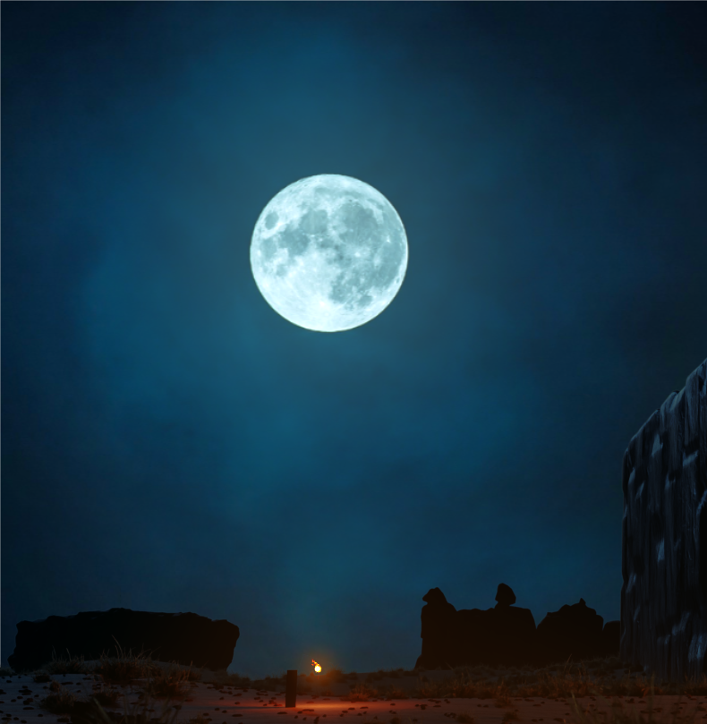
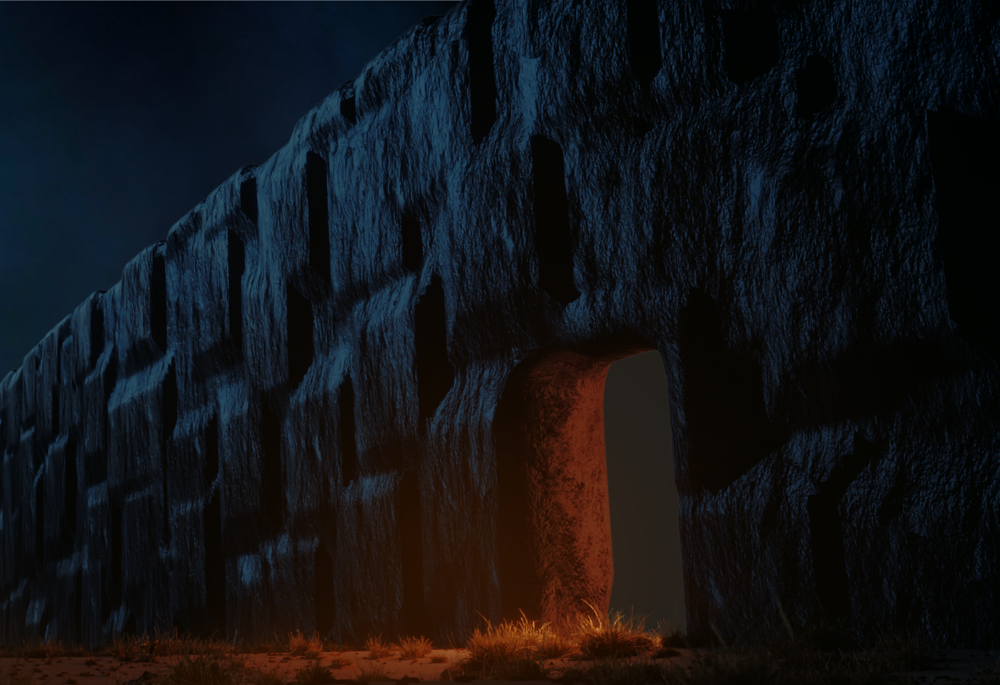
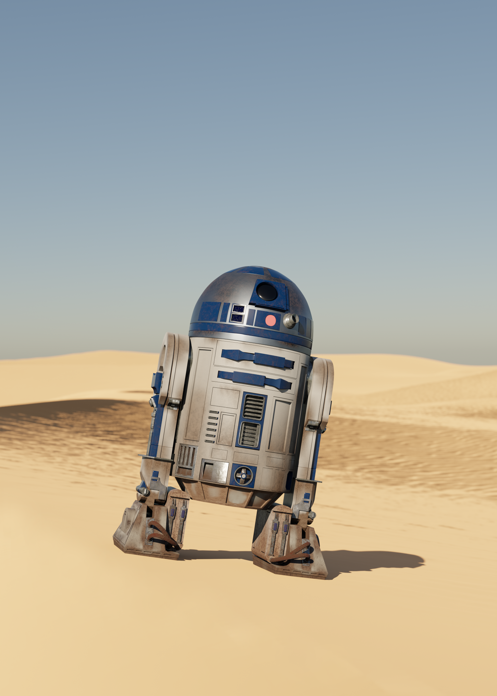
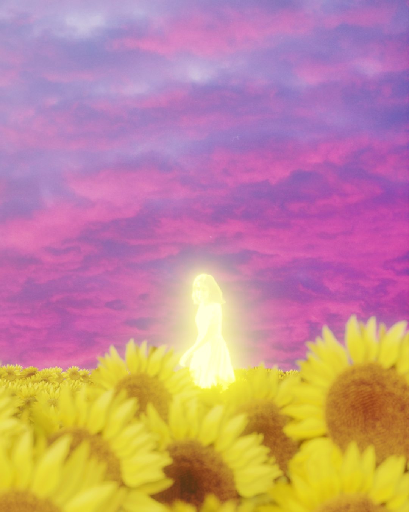